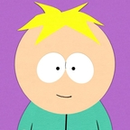

Nicolas Dupont
Chargé de communication en reconversion dans le web & digital
J'apprends de manière autodidacte grâce à Openclassrooms !
MON EXPÉRIENCE
- 2013 : Stage en évènementiel - Association CandyHouse Event
- 2014 : Stage dans une école d'Arts graphiques, organisation d'un évènement pour célébrer les 10 ans de l'école
- 2015 : Stage dans une association humanitaire mettant en relation les habitants de la ville d'Albi et d'Abomey (Bénin) - Stratégie de communication
MES COMPÉTENCES
- Stratégie de Communication
- Benchmark, copy strategy
- Positionnement, Image, Concept
- Évènementiel
- Autres compétences
- Communication interne / externe
- E-marketing, E-commerce, SEO,SEM
- Comportement du consommateur
- Informatique
- Maîtrise de la suite Microsoft Office - PCIE
- Autodidacte sur la suite Adobe - Photoshop, InDesign, Illustrator
- Langues
- Anglais - CAMBRIDGE niveau B2
- Espagnol - DELE niveau A2
MA FORMATION
- 2012 :Bac Scientifique - Lycée Victor Hugo
- 2012-2015 :Licence de Communication Européenne - Fac de Toulouse
- Depuis cette date, Jobs divers et formation aux cours sur OpenClassRooms!